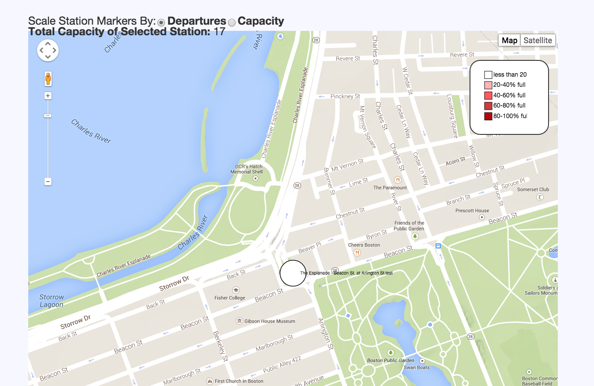
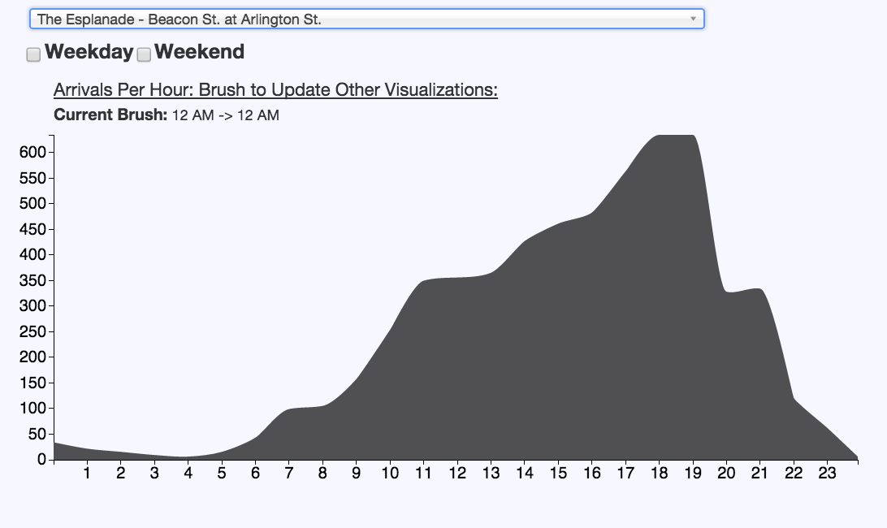
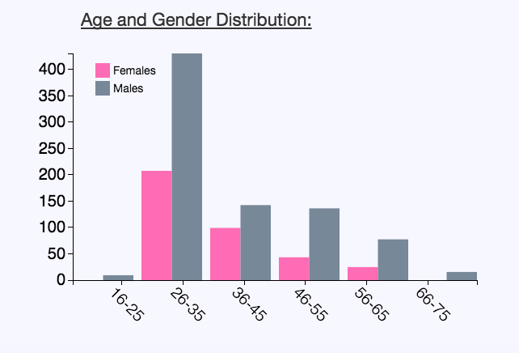

In order to demonstrate the utility of our visualization, we used it to study a specific station to draw recommendations we would provide Hubway managers based on our findings. As a case study, we chose to do a close analysis on the Esplanade station at Beacon St and Arlington St. white, the color of the circle, represents less than 20% full. Because the total capacity at that station is 17, Hubway should add more bikes to this station permanently so more people can come here. This station has a capacity of less than 20% for a long period of time, as seen by the brush.


Also, at this time there are more casual users than registered users. As a result, we can suggest to Hubway to have a helmet station because casual users would be less likely to bring a helmet than registered users.
There are also more younger age people at this station, and more males in general. As a result, Hubway can target promotions towards this demographic at this station.

A similar type of analysis could be performed on any station a user selected on the dropdown menu. Moreover a user could use the capacity and departures sizing toggle above the map to narrow down which stations to examine more closely. For example user could use the legend hover feature to isolate which stations seem to have a larger or smaller capacity than necessary based whether they are usually unused (very full) or overused (very empty). Likewise users could examine the sizes of the markers scaled by departures to examine which stations attract a lot of customers, and thereafter use the demographic and user registration information to shape marketing campaigns for less popular stations that to attract more customers.